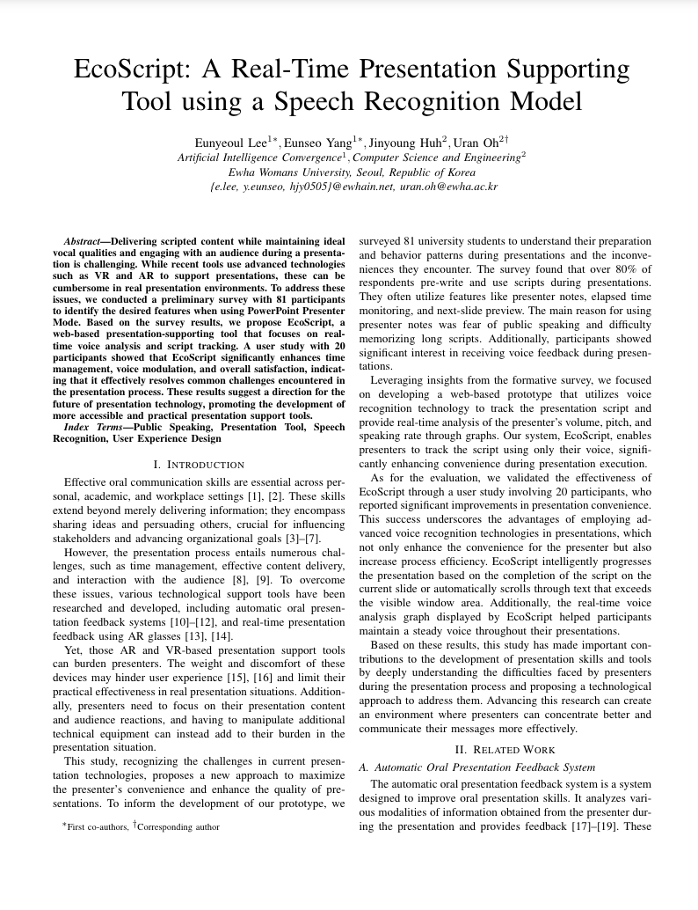
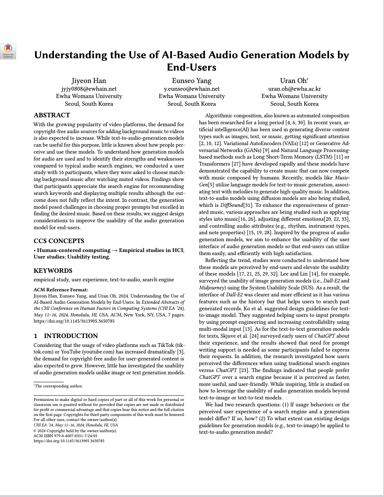

About Me
- Human-Computer Interaction Lab (09/2023-present), Ewha Womans University.
I've started my master's program! HCIL@EWHA - Kyung Hee University (KHU) Medical Center (11/2022-7/2023).
I worked as an AI researcher making a diagnosis-assisted tool. - AI Computing Platform Lab (2022), Ewha Womans University.
I worked as an edge AI research intern. ACPL@EWHA - Bio & Nano Electro-Mechanics Lab (2020-2022), Ewha Womans University.
I worked as an undergraduate researcher on AI algorithms of signal detection and object detection. BNEM@EWHA
Publications

EcoScript: A Real-Time Presentation Supporting Tool using a Speech Recognition Model
Keywords: Speech To Text model, Voice Interaction, Presentation Tool, User Experience Design
IEEE IRI'24 (to appear)

Understanding the Use of AI-Based Audio Generation Models by End-Users
Keywords: empirical study, user experience, text-to-audio, search engine
CHI EA ’24, May 11–16, 2024, Honolulu, HI, USA
DOI

Machine Learning-Assisted Identification of Single-Layer Graphene via Color Variation Analysis
Keywords: machine learning, graphene, support vector machine
2023
PDF

Classifiable Limiting Mass Change Detection in a Graphene Resonator Using Applied Machine Learning
Keywords: Applied machine learning, deep learning, graphene, mass detection, resonator
2022
PDF